Step 1: Configure Dataframe
Over 50 macroeconomic input pricing data points and features sampled from 2017 and updated hourly are available for general data analysis, model development, and live predictions. The output price data is classified based on a simple lookahead labeling strategy. Then, the dataset is configured and made available as a datetime object indexed dataframe CSV file ready for training machine learning classifiers. Training on the provided dataset will ensure the trained models uploaded to the platform can interface with these available input features.
- Click the "1) Configure Dataframe" link from the nav bar located at the top of the page. 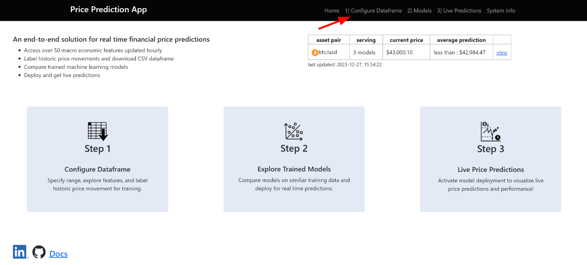
- Select an output asset of interest in the first dropdown in the upper left corner to be used as the target/labeled output price data for training the classifier model.
- Select available features/inputs from the second dropdown. This selection will add the feature trace to the price profile for exploration and visualization. 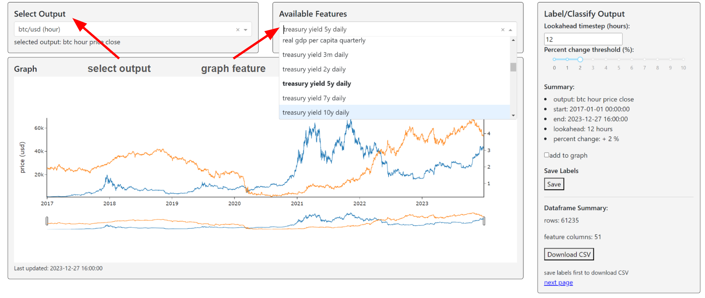
- Adjust data using the slider to the time range of interest and verify start/end time. This time range will be automatically applied to your final dataframe CSV file and will limit the number of observations (rows) available for training/testing. 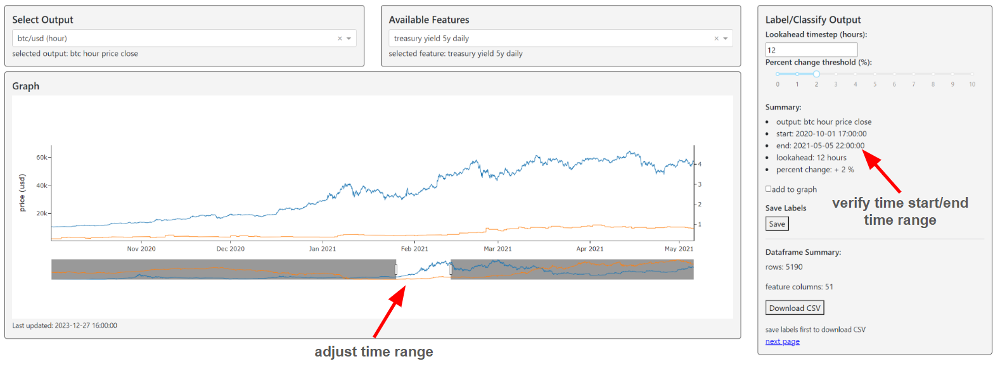
- The Price Prediction App currently has a simple, lookahead binary labeling capability for the selected historical data. The basic idea is if the selected historic output price increases above the percent change threshold within the lookahead timesteps, the row will be classified as 1 (buy) at its original datetime index; otherwise, it will be classified as 0 (hold). The labeling strategy aims to identify historically bullish and bearish price movement
- Label output price data by selecting your prediction lookahead and percent change threshold. 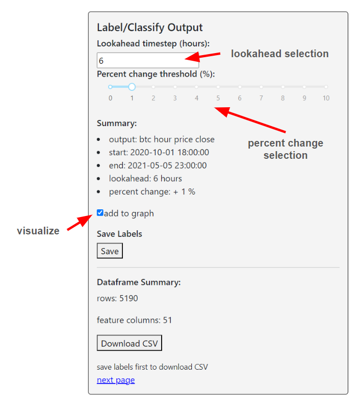
- Then visualize the labeled historic bullish/buy (highlighted green) opportunities on the graph! 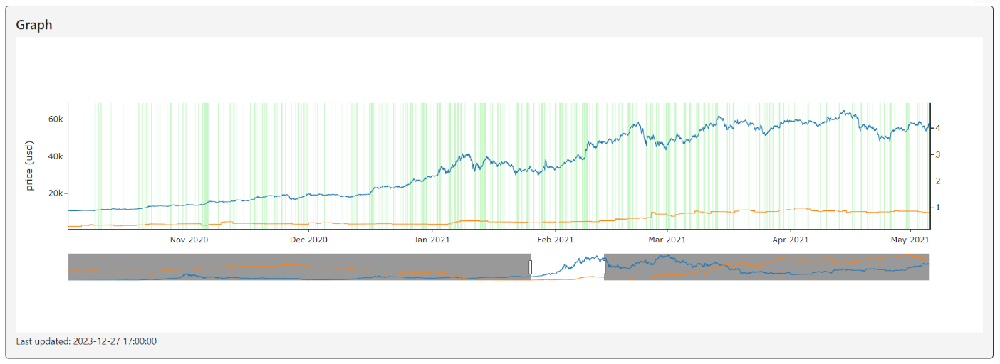
- After confirming dataframe size and labeling properties, save labels info by clicking "Save" (this will record labels info in the database for retrieval during live deployment). 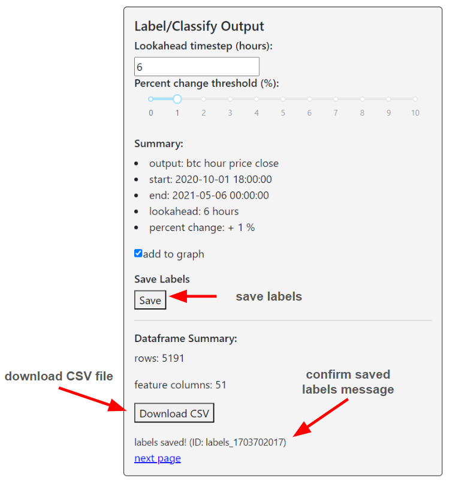
- Download the CSV file for offline analysis and model training. 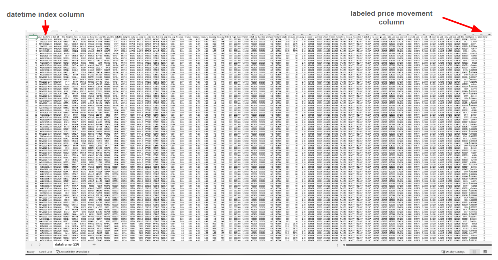
- Select the "next page" link to confirm label availability and for trained prediction model upload/comparison.
Step 2: Explore Trained Models
- Click "2) Models" link from nav bar located at the top of the page.
- Select labels ID from "Available Labels" dropdown. Information on lookahead values/threshold and number of trained models will appear below as well an updated timeframe on the price profile graph where the selected labeling is applicable. 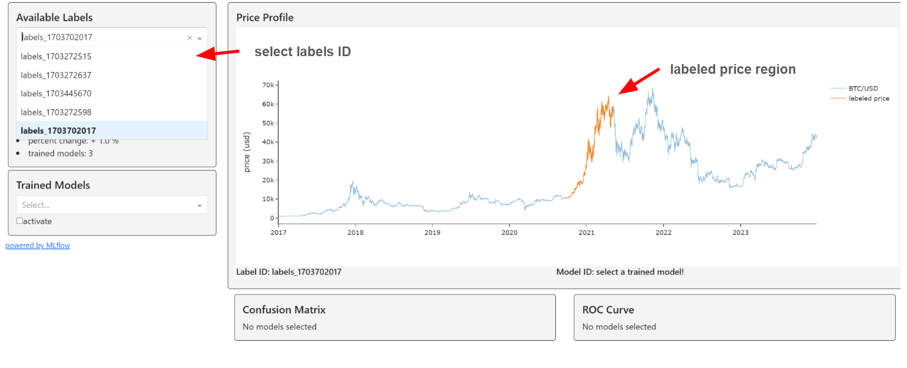
- Explore available trained models in the "Trained Models" dropdown. Basic model information will appear below along with a confusion matrix and ROC curve on the test set. 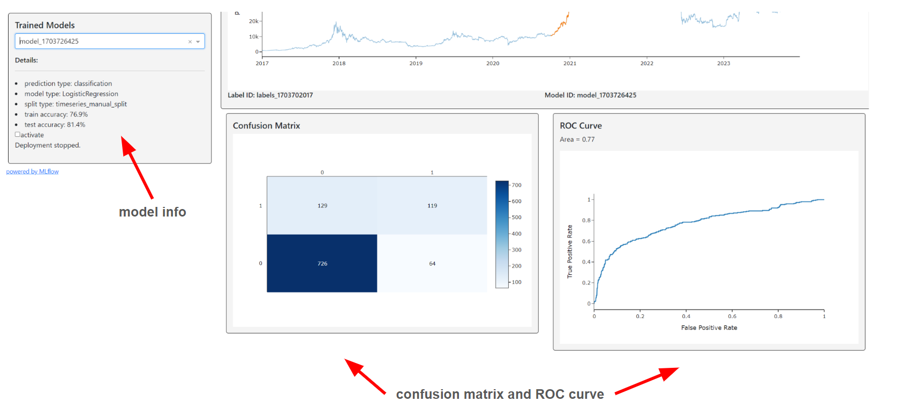
- For detailed model specific information, navigate to Price Prediction App MLflow directory. Click "powered by MLflow" link.
- View all uploaded models, deployment status (staging/production) and basic tagging information from the Registered Models page. 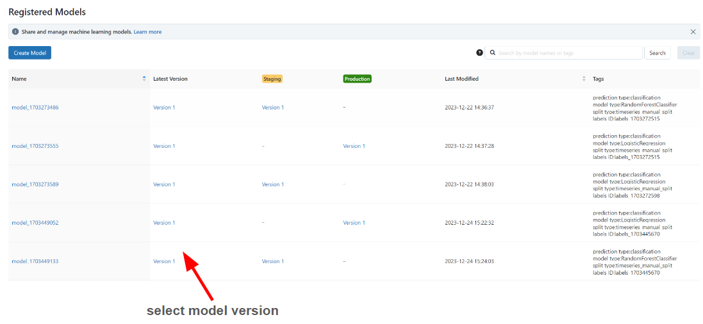
- For model version parameters and metrics, click latest version associated with the model ID then click the associated source run. 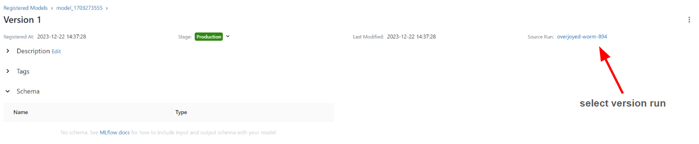 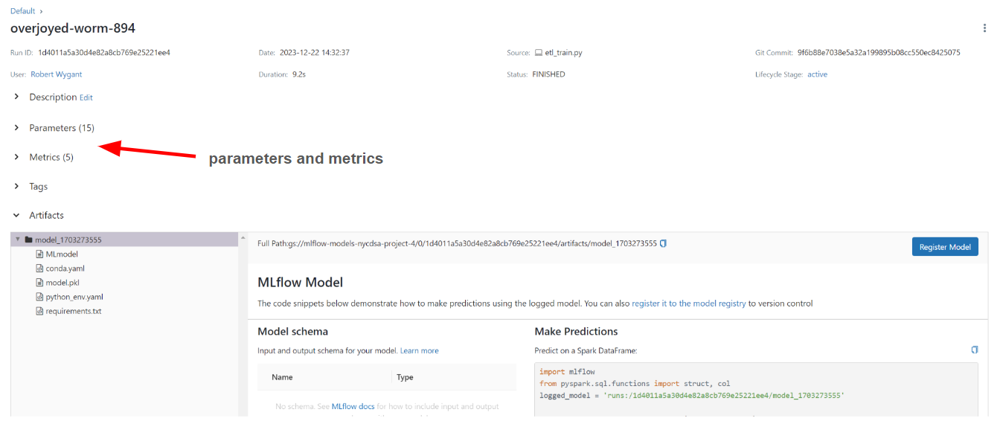
- Finally, to activate/deploy a specific model, check mark "activate" in model details and view live predictions on the next page by clicking "view here" or "3) Live Predictions" navigation bar located at the top of the page. 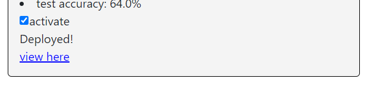
Step 3: Live Price Predictions
Price prediction models are trained offline/locally and uploaded to the Price Prediction App's model directory database and API via a designated MLFlow instance. Trained model objects/artifacts are stored and retrieved from Google Cloud Storage. All trained models must have an associated labels ID to upload and deploy for live predictions.
- Click the "3) Live Predictions" link from the navigation bar located at the top of the page. 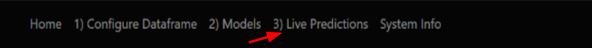
- View prediction results by selecting a model ID from the "Select Deployed Model" links. Also, the deployed model list is sorted by metric from the dropdown.
- Model and labeling details are available under the list of deployed models. 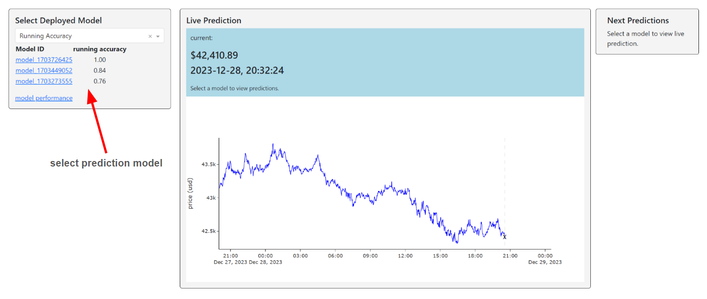
- Information for the current prediction is in blue above the graph. The classification, price threshold, current error, and next prediction time.
- Remaining predictions based on the lookahead value are available under "Next Predictions"
- To access details on model performance and live prediction history, click the "model performance" link. 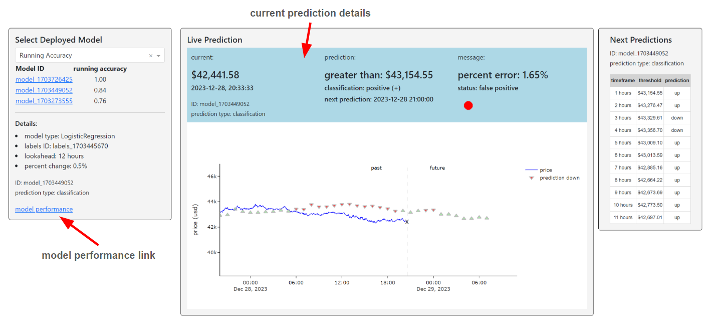
- Two performance visuals are available for the live prediction history, running accuracy difference trace, and a confusion matrix.
- The running accuracy difference trace is simply a difference between running prediction accuracy and test accuracy. Values above 0 mean the model is performing better than its test accuracy.
- The confusion matrix references the live prediction/results history results. All historic live predictions and results are available in this table. 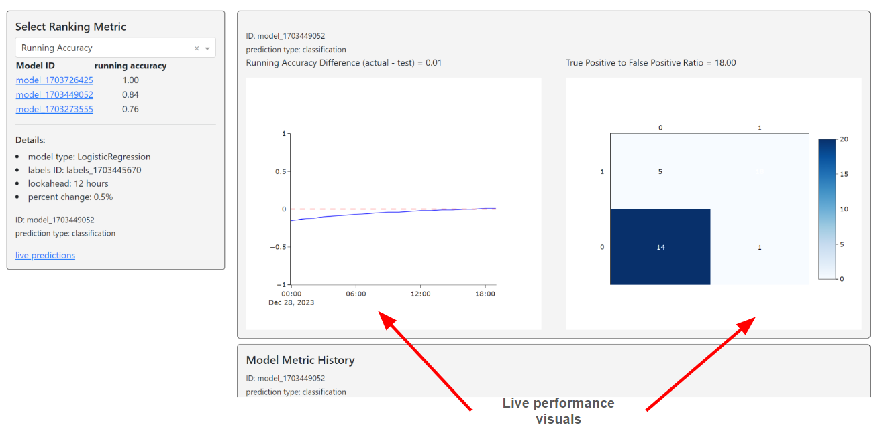 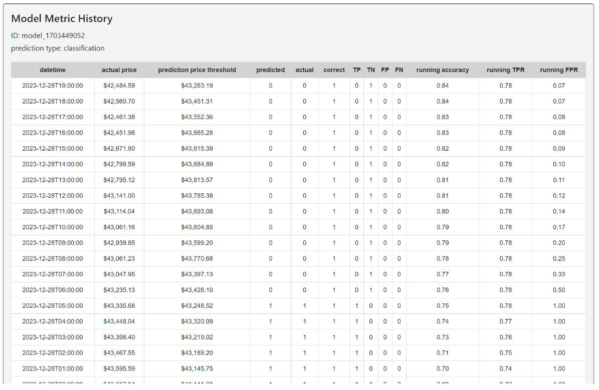
System Info
Basic server-side metrics from Google Cloud Computing are available in the System Info section. Several dashboards powered by Grafana provide monitoring capability connected via Google Cloud APIs.
- Click the "System Info" link from the nav bar at the top of the page.
- Embedded Grafana dashboard 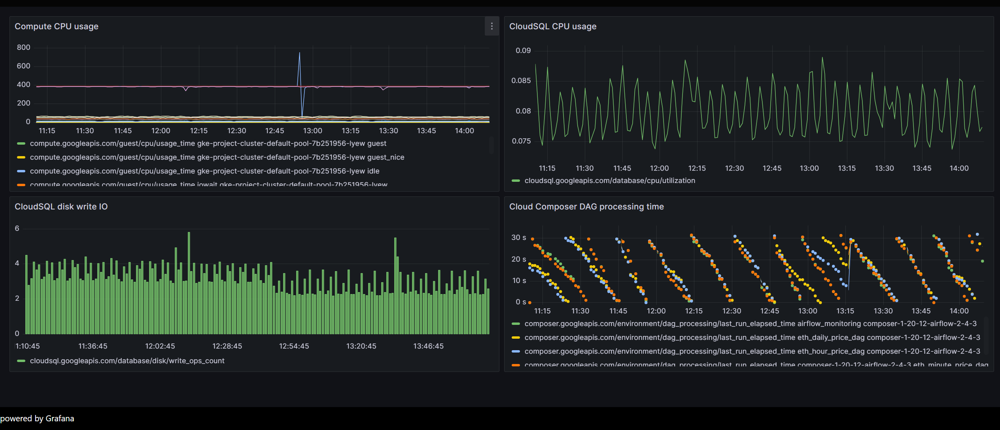